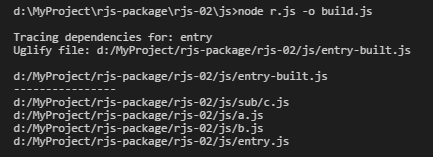
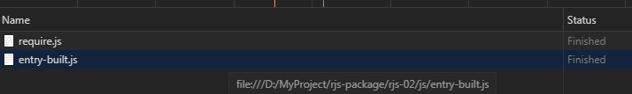

1，结果：（b（ac1））c2
2，打包过程 node r.js -o build.js
3，打包结果
define("sub/c",[],function(){return{fora:"c1",forb:"c2"}}),
define("a",["sub/c"],function(n){return"（a"+n.fora+"）"}),
define("b",["a"],function(n){return"（b"+n+"）"}),
require(["b","sub/c"],function(n,e){console.log(n+e.forb)}),
define("entry",function(){});
4，打包网络加载